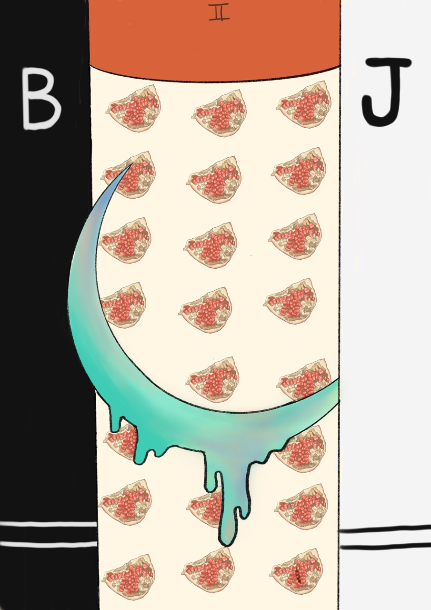

The high priestess
신비한 무의식 세계와의 연결, 미계발 상태의 잠재성, 꿈, 직관, 환상, 느낌, 내면세계, 정신세계
우리가 실재라고 믿는 일상적인 밝은 세계 너머에는 감추어진 또 하나의 세계, 풍요와 잠재성으로 가득한 세계가 존재한다.
우리는 그 세계를 지배하는, 보이지 않는 통치자의 허락 없이는 그곳을 들어갈 수가 없다.
이 세계에는 인성의 보다 어둡고 원시적인 측면들뿐만 아니라, 미계발 상태의 잠재력이 포함되어 있다.
이 세계는 또한 개인의 운명의 비밀을 쥐고 있다. 그것은 어둠 속에서 잉태되어 시간이 무르익을 때 모습을 드러낸다.
고위 여사제는 내면세계의 비밀을 알고 있는 우리 내면의 한 부분을 상징한다. 그러나 지나가는 꿈의 단편들을 통해 나타나기도 하며, 이상한 우연의 일치를 통해 나타나기도 한다.
페르세포네는 매혹적인 존재이긴 하지만 자신의 비밀을 말하지는 않는다. 꿈, 환상, 직관을 통해 힐끗 보게 되는 무의식의 밤 세계 또한 매력적이다. 그러나 지성으로 그것을 붙잡으려 애쓰고 개인적인 목적으로 지배하려고 한다면, 그것은 묵묵부답의 상태로 있다가 슬그머니 사라져 버린다.
페르세포네의 어두운 세계는 인간의 내면에 작용하는 패턴과 운동들을 희미하게만 보여준다.
그것이 밝은 세계로 드러나기 위해서는 인내와 시간이 요구된다. 페르세포네의 신화는 끊임없이 왕복되는 신비의 리듬을 묘사함으로써 시간의 순환 운동을 강조하고 있다.
고위 여사제는 영혼의 심연 속에서 작용하는 자연법칙을 상징한다.